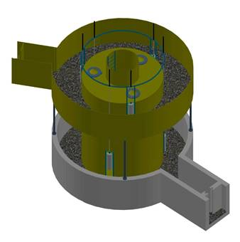
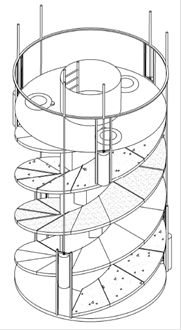

3 Methods
3.1 Description of the FSSG
The FSSG or Fish Spiral Sluice Gate or ‘Fischwendelschleuse’ is a fish passage with an adjustable attracting current aimed for all fish species (Fig. 3.1). This system enables continuous sluice operation and should also accommodate bottom-dwelling fish. It features an individually doped multi-chamber lock system with adjustable current options in both the inflow and outflow chambers.
Figuur 3.1: Operating principle of the FSSG.
The fish pass is designed to be as natural as possible via a natural substrate base and upright built (i.e., not rotating) (Fig. 3.2). The lock control is adaptable for each lock chamber to suit different target fish species. The FSSG lock is compact, suitable for fall heights of 1 to 10 meters. It has few moving parts and simple controls. Currently, the FSSG lock is being designed with diameters of 2 to 5 meters and flow rates of 50 to 500 liters per second. An additional attracting flow of approximately 500 to 2500 liters per second can be realized for both inflow and outflow.


Figuur 3.2: The entire fish pass is designed to be as natural as possible via a natural substrate base (left) and upright built (right).
3.1.1 Underwater connection via the outflow chamber and guide flow opening
The FSSG lock is installed underwater within a custom-designed outflow chamber, which also serves as its foundation (Fig. 3.3). This chamber guides fish either ascending to the lock doors or descending to the guide flow opening. To mimic a natural environment, the outflow chamber is filled with base substrate.
Figuur 3.3: Inlet of the FSSG.
3.1.2 Upstream connection via the inflow chamber and guide flow opening
A watertight inflow chamber is installed upstream of the FSSG lock, its height designed to accommodate the normal fluctuations in surface water levels (Fig. 3.4). This inflow chamber facilitates the targeted movement of fish, guiding those willing to descend to all lock doors and those ascending to the guide flow opening. To mimic a natural environment, the chamber is filled with base substrate.
Figuur 3.4: Outlet of the FSSG.
3.1.3 Continuous multi-chamber lock system
Due to its design, the function of the multi-chamber lock system (Fig. 3.5) in the FSSG lock cannot be divided into distinct successive phases. Typically, lock systems operate in phases such as swimming in, lifting or lowering, and floating out. In the FSSG lock, these phases can occur simultaneously within the lock chambers, enabling continuous locking without unfavourable dwell times for the fish. The upper and lower water entries into the FSSG lock are through vertically operated, slow-moving lock doors.
Figuur 3.5: Valves of the FSSG.
Artificial lighting using LED strips is provided. To mimic nature-like conditions inside the FSSG, LED-lighting was operated to approximate day/night conditions with the light being turned off during the night and turned on during the day. The central tube is flood-proof and closed at the top with a translucent dome. Waterproof maintenance accesses are installed at the top of the lock system for cleaning and filling with base substrate. Electrical or hydraulically automated devices for the lock doors are also located here, along with a safety railing to prevent falls.
3.2 Set-up
Only one of the three canals built in the system was used in the experimental set-up. Prior to the experiments (Fig. 3.6), the lower and upper tanks were slightly modified by installing a metal plate to direct the flow of the lower valve towards the rank. Additionally, possible escape routes from the test tank were closed with a small mesh sized grid. Potential “shelter” areas under the bottom plates of the valve were also closed off.
Figuur 3.6: Front view of the FSSG.
Two HDX PIT antennae (30 cm * 40 cm) made of two loops of insulated 4 mm wired welding cable, fixed on a PVC pipe and connected to antenna tuners and permanent OREGON RFID readers, were installed, each on the front of the upper or lower valve. They were both tuned to have a narrow detection range of approximately 15 cm so that fish would be detected when they cross the valve only – and thus enter the system. Preliminary testing of the system was conducted, assuring the efficiency and detection range of the PIT telemetry set-up.
3.3 Fish experiments
For the experiments of 15/5/2024 (exp1), 22/5/2024 (exp2) and 29/5/2024 (exp3) 60, 102 and 124 individuals of ide (Leuciscus idus) were used. These fish were bought from fish farm Vandeput in Zonhoven (Belgium) which utilizes fish culture ponds. If possible, fish used for one experiment were re-used for the next to increase the sampling size and assess the effect of experience. In the second experiment 42 fish were re-used while in the last experiment 88 fish were re-used. Valve data was available for the entire duration of the experiments, albeit at different temporal resolutions (see further). It was decided to work with only one species to allow for an acceptable statistical power to draw sound conclusions. Fish were provided with a PIT-tag and the length and weight of each individual was written down. All fish were released together at the start of the experiment (in the morning to early noon) in the lower tank. The lower and upper tank had a water volume of 6.5 m³ (5.0 m length x 1.3 m water level x 1.0 m width) and 17.0 m³ (3.55 m length x 1.05 m width x 4.56 m water level) respectively. The outflow chamber had a water volume of 24.37 m³ (1.2 m width x 4.31 m water level). The inflow chamber was closed of to ensure fish would enter the FSSG.
3.3.1 Environmental conditions
Water velocities were measured during preliminary tests under different conditions and ranged between 0.1 m/s to 0.4 m/s (Table 3.1). Environmental measurements were taken at the beginning and at the end of every experiment in the morning to early noon. Water temperature, pH, oxygen percentage and air temperature were on average respectively 17.5 °C, 8.5, 7.0 mg/L and 15.4 °C (Table 3.2).
| Measured at | Opening of lower valve | Opening of upper valve | Water velocity (m/s) |
|---|---|---|---|
| Lower valve | 100.0 % | 2.5 % | 0.2 |
| Lower valve | 100.0 % | 5.0 % | 0.4 |
| Upper valve | 2.5 % | 100.0 % | 0.1 |
| Upper valve | 5.0 % | 100.0 % | 0.2 |
| Description | Date | Time | WaterTemp | pH | OxygenPerc | OxygenConc | AirTemp |
|---|---|---|---|---|---|---|---|
| exp1 | 15-5-2024 | 13:00 | 19.1 | 8.3 | 73.7 | 6.8 | 18.8 |
| exp1 | 21-5-2024 | 09:00 | 17.4 | 8.8 | 62.2 | 6.0 | 15.0 |
| exp2 | 22-5-2024 | 10:00 | 16.9 | 8.3 | 70.2 | 6.8 | 16.8 |
| exp2 | 28-5-2024 | 07:00 | 17.2 | 8.7 | 102.0 | 10.7 | 12.5 |
| exp3 | 29-5-2024 | 10:00 | 16.9 | 8.4 | 55.0 | 5.4 | 17.0 |
| exp3 | 05-6-2024 | 09:00 | / | / | 62.7 | 6.1 | 12.0 |
| start.exp | stop.exp | start.gate | stop.gate | |
|---|---|---|---|---|
| exp1 | 2024-05-15 12:53:00 | 2024-05-21 18:00:00 | 2024-05-15 12:53:00 | 2024-05-21 18:00:00 |
| exp2 | 2024-05-22 13:07:00 | 2024-05-28 18:00:00 | 2024-05-22 13:07:00 | 2024-05-28 18:00:00 |
| exp3 | 2024-05-29 12:08:00 | 2024-06-05 18:00:00 | 2024-05-29 12:08:00 | 2024-06-05 18:00:00 |
3.4 Data processing
All the different sites where fish were either released, detected or recaptured are further on referred to as nodes.
Pit tag data were compressed using the default settings of the function compress of the R package PITCleanr. This data compression involves determining the first and last detection of a series of subsequent detections on a node as well as the number of detections during each slot (from first and last detection).
The location where the fish were released (i.e., the lower tank) was designated as the initial node, with the corresponding timestamp marking the start of each fish’s journey. Conversely, the recapture location was identified as the final node, with the corresponding timestamp indicating the end of each fish’s journey. All fish were alive and presumed to still have their tags at the time of release. However, some fish were found dead and/or tagless upon recapture. Due to the low detection rate of the antennas, particularly the upper one, we did not attempt to match unidentified fish with tag IDs from the release data. In a system with higher detectability, it might have been feasible to trace unidentified fish back to known but not-recaptured tag IDs with a reasonable degree of certainty. Unfortunately, this was not the case in our system. For the experiments, for which recapture data was available, fish were only included in the dataset if they were recaptured and identified upon capture. More specifically, detections and observations of fish which were not recaptured, had escaped the system or could not be identified due to tag loss were omitted. For exp1, six fish were found without a tag and 13 fish were not recaptured (six of them because of the absence of a tag). For exp2, three fish were not recaptured. For exp3, one fish was found without a tag and eight fish were not recaptured (one of them because of the absence of a tag).
The temporal resolution and range of the valve-opening and pressure data was different between experiments. In order to harmonize the temporal resolution between experiments and to easily link fish data with valve and pressure data, linear interpolation was applied to yield a temporal resolution of one second. A valve was considered open when the opening was larger than 28 cm. For all experiments the valve was considered closed when the opening was less than 3 cm. For every second the time since the last opening was determined.
When linking the valve data to the fish data, for passage through the lower and upper valve respectively the first detection and last detection were used. This was done because we were mainly interested in when fish enter (via the lower valve) and leave (via the upper valve) the system.
Time was for all data initially in local Brussels time but was changed to UTC for transparency.
| Metric | Definition | Calculation |
|---|---|---|
| Entrance time | Time between release and entrance | Time between release and first detection at the lower antenna |
| Passage time | Time between entrance and exit | Time between last detection at the lower antenna and last detection at the upper antenna |
| Attraction efficiency | Proportion of tagged fish able to locate the entrance of the FSSG | / |
| Entrance efficiency | Proportion of tagged fish able to enter the FSSG | Proportion of released fish detected on either the lower antenna, upper antenna or recaptured in the upper basin |
| Passage efficiency | Proportion of entered fish that were able to move through the exit of the FSSG | Proportion of fish that are detected on the upper antenna and/or recaptured in the upper basin over the fish that are known to have entered |
| Overall efficiency | Proportion of tagged fish able to move through the FSSG | Proportion of fish that are detected on the upper antenna and or recaptured in the upper basin over the total number of tagged fish. |
 Bruneel et al. (2026). 10.21436/inbor.156782614
Bruneel et al. (2026). 10.21436/inbor.156782614